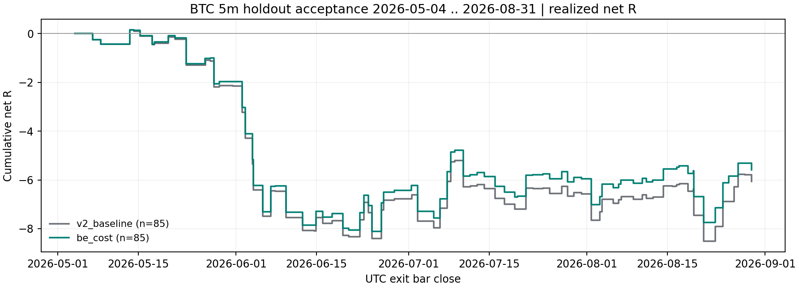

这是该配置第 1 次消耗 holdout，也是本仓第 2 次记录在案的 holdout 读取 （docs/HOLDOUT_LEDGER.md 第 2 条，在读取任何字节之前登记并提交）。
计分区间 2026-05-04T00:00Z → 2026-08-31T16:00Z（约 3.9 个月）， 实际读入 holdout K 线 34,464 根，计分信号 157 个 （多 79 / 空 78）。 原参数组 85 笔完整交易，净 -6.06R， 每笔 -0.0713R，毛 -0.40R， PF 0.712。
| 组 | 标准 | 判定 | 实际值 |
|---|---|---|---|
| 原参数 BB200/2.0/3%（图上那版） | ① 扣费后总净 R 为正 | ❌ 不满足 | -6.06 |
| 原参数 BB200/2.0/3%（图上那版） | ② 配对随机对照超额为正 | ✅ 满足 | +0.0298 |
| 原参数 BB200/2.0/3%（图上那版） | ③ 月块单侧 p < 0.01 | ❌ 不满足 | 0.5000 |
| ＋保本含 0.2% 成本 | ① 扣费后总净 R 为正 | ❌ 不满足 | -5.58 |
| ＋保本含 0.2% 成本 | ② 配对随机对照超额为正 | ✅ 满足 | +0.0367 |
| ＋保本含 0.2% 成本 | ③ 月块单侧 p < 0.01 | ❌ 不满足 | 0.4375 |
三条标准在读数据之前就写死在 config.json 与计划里，由代码逐条判定， 任何一条不满足即为未通过。本次未通过，本配置即被否决；后续任何 BTC 5m BB×Stoch 参数实验都必须重新取得 holdout 授权。
| 组 | 完整交易 | 净 R | 每笔净 R | 毛 R | 净胜率 | PF | 回撤 R | 最大连亏 | 配对超额 R/笔 | 月块 p |
|---|---|---|---|---|---|---|---|---|---|---|
| 原参数 BB200/2.0/3%（图上那版） | 85 | -6.06 | -0.0713 | -0.40 | 47.06% | 0.712 | 8.67 | 6 | +0.0298 | 0.5000 |
| ＋保本含 0.2% 成本 | 85 | -5.58 | -0.0656 | +0.08 | 54.12% | 0.732 | 8.26 | 5 | +0.0367 | 0.4375 |
| 原参数 BB200/2.0/3%（图上那版）·先走逆向 | 85 | -6.06 | -0.0713 | -0.40 | — | — | — | — | — | — |
| ＋保本含 0.2% 成本·先走逆向 | 85 | -5.58 | -0.0656 | +0.08 | — | — | — | — | — | — |

| 组 | 每边 0bp | 每边 2bp | 每边 5bp | 每边 10bp | 盈亏平衡费率 f* |
|---|---|---|---|---|---|
| 原参数 BB200/2.0/3%（图上那版） | -0.40 | -1.53 | -3.23 | -6.06 | -0.95 bp |
| ＋保本含 0.2% 成本 | +0.08 | -1.05 | -2.75 | -5.58 | -0.21 bp |
费用不改变止损、止盈与成交价，这几档是从同一条价格路径精确重算的。 f* = Σ毛盈亏 / Σ成交名义，即使总净额归零所需的每边费率。
| 最终退出原因 | 笔数 | 净 R 合计 |
|---|---|---|
| 平半后保本 | 26 | +1.33 |
| 完整反向信号退出 | 24 | +13.33 |
| 平半时新保护价已被越过 | 21 | -5.79 |
| 初始止损 | 14 | -14.93 |
计划里写明的预期是未通过，理由是前段（2023-12 → 2026-04）该规则毛 +4.98R/697 笔、 f* 仅 +0.51 bp/边，而 OKX 最低 maker 2 bp。 本次实际 f* 为 -0.95 bp/边。 把预期写在前面是为了两件事：不让"果然没过"被说成早有洞见，也不让万一通过被当成可以直接下单。
results.json 已存在时直接拒绝运行。源码冻结提交 c8c72e3f5ed51d68615875fd706dce25c71eee80；数据 SHA256 6d9bc74324bf733c…， 窗口 2026-02-28 16:00:00+00:00 → 2026-08-31 16:00:00+00:00，计分自 2026-05-04 00:00:00+00:00。 验证记录：{"focused_tests": {"command": ".venv/bin/python -m pytest tests/evaluation/test_btc_bb_stoch_acceptance.py -q", "passed": 5, "failed": 0}, "broad_gates": {"command": ".venv/bin/python -m pytest tests/boundaries tests/causality tests/parity -q", "passed": 468, "failed": 7, "scope": "unchanged pre-existing failures already disclosed in HANDOFF"}, "economic_ledger_checks": 2064, "holdout_consumed": true, "holdout_ledger_index": 2, "holdout_rows_read": 34464, "second_run_refused_by_code": true, "frozen_prefix_reader_unchanged": true, "accepted": false, "criteria_met": {"v2_baseline": {"net_r_positive": false, "excess_mean_net_r_positive": true, "signflip_p_below_threshold": false}, "be_cost": {"net_r_positive": false, "excess_mean_net_r_positive": true, "signflip_p_below_threshold": false}}, "training_eligible": false, "production_eligible": false}。
cd /Users/zhangzc/fable-trading
.venv/bin/python -m pytest tests/evaluation/test_btc_bb_stoch_acceptance.py -q
.venv/bin/python -m src.data.fetch_okx --symbols BTC_USDT_SWAP --bar 5m \
--archive-monthly-start 2026-03 --archive-monthly-end 2026-08 \
--archive-max-exclusive 2026-09-01T00:00:00Z --out-dir data/kline_holdout_btc5m
.venv/bin/python -m yoyo.evaluation.btc_bb_stoch_acceptance # 已跑过，会拒绝重跑
.venv/bin/python -m yoyo.evaluation.btc_bb_stoch_acceptance_report